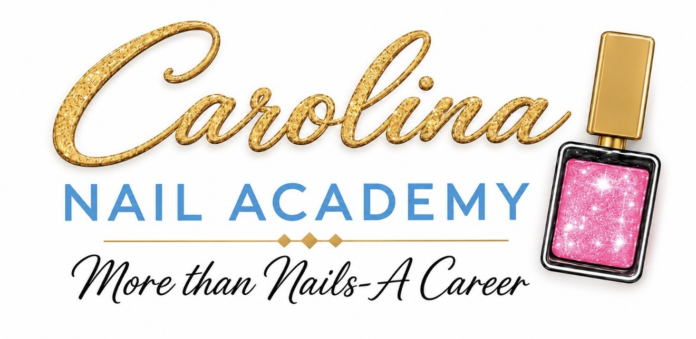
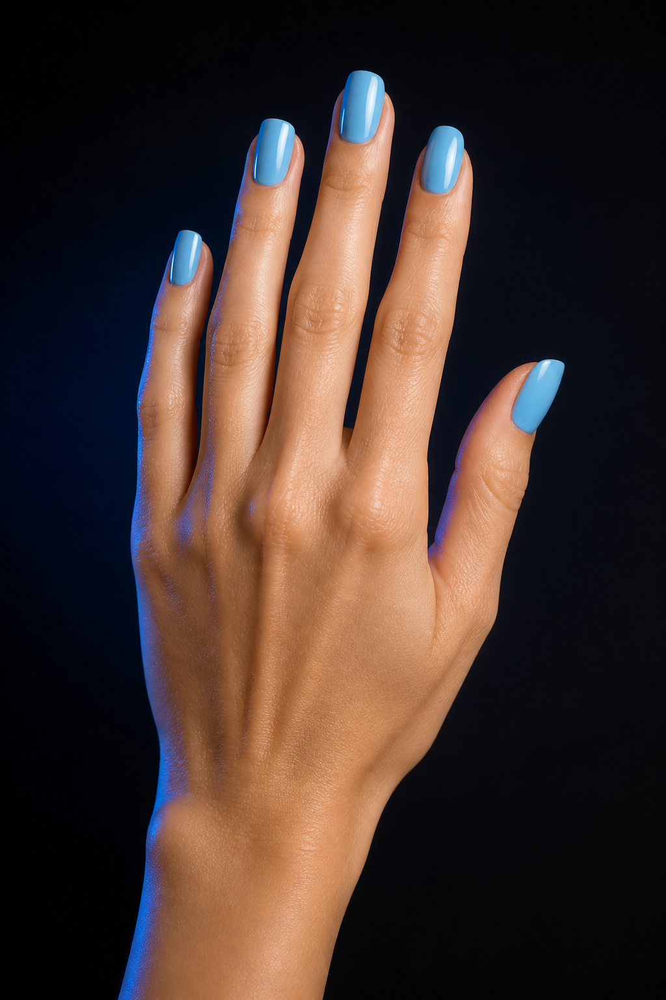
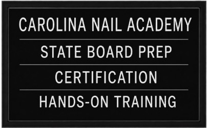

Professional Nail Education
Learn the craft.
Build your future.
Hands-on training, certification support, and focused state board preparation for students ready to turn creativity into a real career.
State Board PrepCertificationHands-On Training

Carolina Nail Academy
LEARN.CREATE.
SUCCEED.
State Board PrepCertificationHands-On Training
More Than Nails A Career
More Than Nails—A Career
CREATIVITY IS THE START.
CONFIDENCE IS THE GOAL.
Carolina Nail Academy is designed for people who want more than a hobby. Students learn the technical skills, professional habits, and state board discipline required to move toward a career in nail technology.
Our approach is personal, practical, and built around doing the work. You’ll practice technique, learn why it matters, receive feedback, and repeat the process until confidence starts to replace hesitation.
Learn it. Create it. Own it.
The Program
TRAIN FOR THE WORK
YOU WANT TO DO.
From sanitation and natural nail care to enhancements, design, and client service, every module builds toward professional readiness.
technology program
to attend
class options
West Columbia, SC 29170
Choose Your Schedule
TRAIN IN THE DAY.
OR AFTER HOURS.
Two paths to complete the same 300-hour Nail Technology Program. Contact the academy to confirm the next start date and current availability.
What You’ll Learn
300 HOURS WITH A PURPOSE.
Foundation
Safety &
Sanitation
Build clean, repeatable procedures that protect you, your clients, and your future license.
- Infection control
- Service setup
- Professional standards
Technique
Nail Care &
Enhancements
Learn preparation, application, structure, balance, maintenance, and a polished finish.
- Natural nail care
- Product control
- Shape and structure
Artistry
Color, Shape
& Design
Strengthen your eye for proportion, color, detail, and the creative choices that make work yours.
- Design principles
- Surface finish
- Signature style
Professional
Client &
Career Skills
Practice consultation, timing, communication, service flow, and career-ready habits.
- Client experience
- Time management
- Career confidence
The Art of the Finish
DETAIL IS
THE DIFFERENCE.
Shape, balance, polish, and clean execution turn technique into professional work. At CNA, students practice the details clients notice.
Selected: Carolina Blue

technique.
Signature results.
State Board Preparation
PREPARE WITH
PURPOSE.
Technique matters. So does knowing how to organize, explain, and perform under test-day expectations.
01
ProceduresPractice clean, consistent steps and service sequencing.
02
TerminologyStrengthen the language and theory behind the work.
03
Test-Day DisciplineBuild organization, timing, and confidence through repetition.

READYFOR WHAT'S NEXT
The CNA Experience
LEARN. CREATE.
SUCCEED.
Training should feel focused, creative, encouraging, and connected to the professional you want to become.
Hands-on by design
Practice, receive feedback, adjust, and do it again until the skill feels familiar.
Professional from day one
Build the communication, timing, and service standards that matter beyond the classroom.
Confidence through repetition
Develop reliable habits by pairing clear instruction with deliberate, consistent practice.
Your creativity belongs here
Use strong fundamentals as the base for your own eye, voice, and signature approach.
Your Next Chapter
FROM “MAYBE”
TO “I’M READY.”
Explore
Ask every question.
Learn about current schedules, tuition, admissions requirements, and upcoming start dates.
Train
Build the skill.
Practice technique, artistry, client service, and the professional standards behind the work.
Prepare
Own the next step.
Strengthen your confidence, prepare for licensing requirements, and move toward your career.
Ready When You Are
YOUR FUTURE
COULD START
RIGHT HERE.
Request current program information, class schedules, tuition details, admissions requirements, or a tour.
Program detailsClass schedulesTuition informationAdmissions